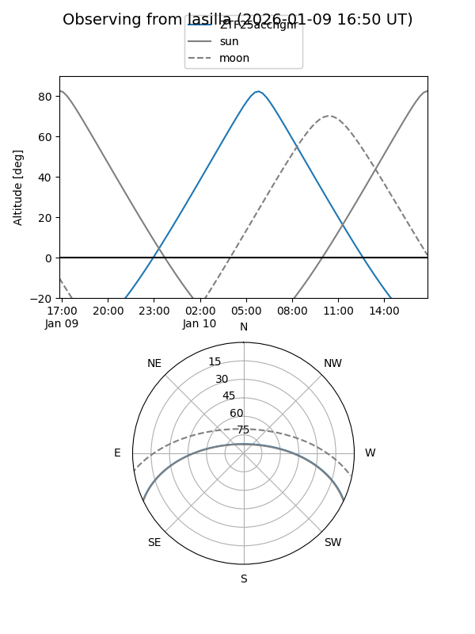
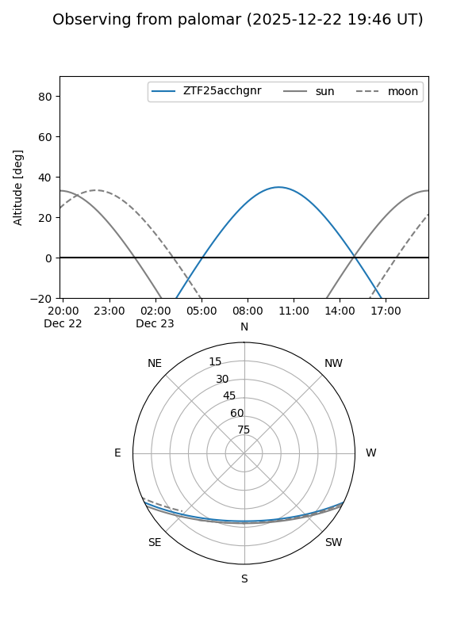

ZTF25acchgnr
Target ZTF25acchgnr at 2025-12-22 19:01
Aliases and brokers:
FINK: fink-portal.org/ZTF25acchgnr
Lasair: lasair-ztf.lsst.ac.uk/objects/ZTF25acchgnr
ALeRCE: alerce.online/object/ZTF25acchgnr
alt names
ZTF25acchgnr (ztf,fink_ztf)
Coordinates:
equatorial (ra, dec) = 125.6524,-21.62222
equatorial (HMS+DMS) = 08:22:36.58,-21:37:20.00
galactic (l, b) = (242.7991,+8.77177)
Flags:
Photometry:
last ztfr=20.37
1 ztfr detections
Lightcurve

Visibility


Additional plots